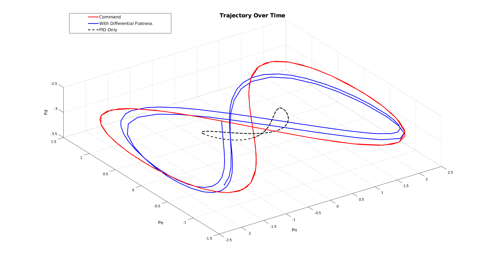
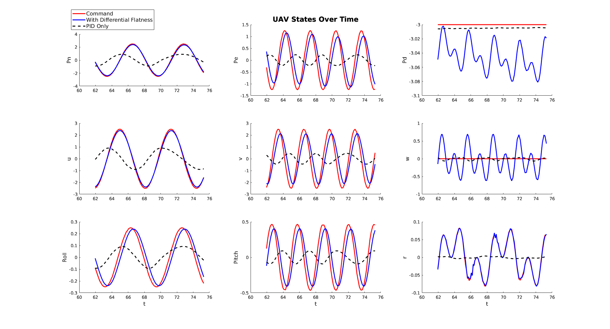
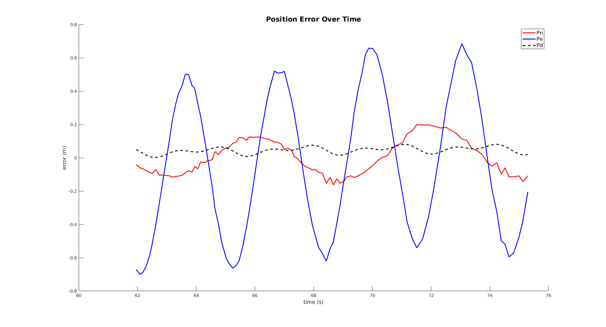

clc
clear
load pid_data2.mat
pid_pn = pn(500:600);
pid_pe = pe(500:600);
pid_pd = pd(500:600);
pid_pn_c = pn_c(500:600);
pid_pe_c = pe_c(500:600);
pid_pd_c = pd_c(500:600);
pid_u = u(500:600);
pid_v = v(500:600);
pid_w = w(500:600);
pid_u_c = u_c(500:600);
pid_v_c = v_c(500:600);
pid_w_c = w_c(500:600);
pid_yaw_c = yaw_c(500:600);
pid_pitch_c = pitch_c(500:600);
pid_roll_c = roll_c(500:600);
pid_yaw = yaw(500:600);
pid_pitch = pitch(500:600);
pid_roll = roll(500:600);
pid_p = p(500:600);
pid_q = q(500:600);
pid_r = r(500:600);
pid_p_c = p_c(500:600);
pid_q_c = q_c(500:600);
pid_r_c = r_c(500:600);
load diff_flat_data2.mat
pn = pn(500:600);
pe = pe(500:600);
pd = pd(500:600);
pn_c = pn_c(500:600);
pe_c = pe_c(500:600);
pd_c = pd_c(500:600);
u = u(500:600);
v = v(500:600);
w = w(500:600);
u_c = u_c(500:600);
v_c = v_c(500:600);
w_c = w_c(500:600);
yaw_c = yaw_c(500:600);
pitch_c = pitch_c(500:600);
roll_c = roll_c(500:600);
yaw = yaw(500:600);
pitch = pitch(500:600);
roll = roll(500:600);
p = p(500:600);
q = q(500:600);
r = r(500:600);
p_c = p_c(500:600);
q_c = q_c(500:600);
r_c = r_c(500:600);
xmatrix = [pn_c;pn;pid_pn]';
ymatrix = [pe_c;pe;pid_pe]';
zmatrix = [pd_c;pd;pid_pd-1]';
createfigure(xmatrix,ymatrix,zmatrix)
for i = 1:length(pitch_c)
if pitch_c(i) ==0
pitch_c(i) = (pitch_c(i-1)+pitch_c(i+1))/2;
end
end
t = time(500:600);
pn_data = [pn_c;pn;pid_pn]';
pe_data = [pe_c;pe;pid_pe]';
pd_data = [pd_c;pd;pid_pd-1]';
u_data = [u_c;u;pid_u]';
v_data = [v_c;v;pid_v]';
w_data = [w_c;w;pid_w]';
roll_data = [roll_c;roll;pid_roll]';
pitch_data = [pitch_c;pitch;pid_pitch]';
r_data = [r_c;r;pid_r]';
createfigure1(t,pn_data,pe_data,pd_data,u_data,v_data,w_data,roll_data,pitch_data,r_data)
en = pn_c-pn;
ee = pe_c-pe;
ed = pd_c-pd;
figure(3);clf
hold on
plot (t,en,'r','LineWidth',2)
plot (t,ee,'b','LineWidth',2)
plot (t,ed,'k--','LineWidth',2)
legend3 = legend('Pn','Pe','Pd');
set(legend3,...
'fontsize',12);
xlabel('time (s)','fontsize',12)
ylabel ('error (m)','fontsize',12)
title('Position Error Over Time','fontsize',16)
  